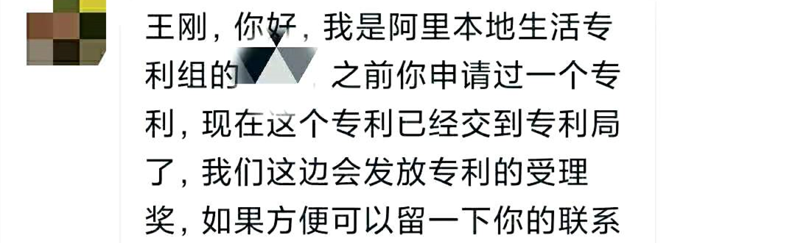

1 2020年度总结，似乎没有什么大的长进，似乎也得到了一些收获¶

上一次写总结还是在 2019 年 5 月份，《五年总结（从实习一直软件测试）》，文章开头我写了这一句话，“现状，不温不火，仍有激情，持续学习，期待爆发”。又一年过去了，似乎没有什么大的长进，似乎也得到了一些收获。我一直有一个执念，觉得自己应该成为优秀的人，这可能也是因为上学时期成绩每次大考都发挥不错。工作以后却始终没有出现过这样让我特别兴奋的成就，让我有时候怀疑是不是选择错了专业，不该搞计算机。
刚上大学那会，我是个连 IP 都不懂的小白。我以为计算机是学 Photoshop，制作视频那种。因为我的兴趣在这方面，比如玩游戏我并不关心装备、闯关，我更关注漂亮唯美的过场动画和酣畅淋漓的打击效果。结果才知道学的是编程。本来基础不好，加上在 985 211 学校，人才济济，跟别人对比下来落差挺大，导致心态有点崩。特别抵触写代码。记得当时学院有一个男生和一个女生特别厉害，属于参加 ACM 编程大赛能拿奖那种。我等渣渣只能望尘莫及，唉唉叹息。这种感觉一直持续到了就业。我选择了软件测试这个行业。
做出这个选择，也不是简简单单不喜欢编程。我分析了软件测试需要具备的能力，结合岗位要求、未来前景，综合评估下来，认为我是有优势并且很有前途的。事实证明也的确如此。毕业后进入了一家税务公司，金 Bug 奖、测试效率奖还是拿了好几个。抛开情绪问题来说，整体上还不错。但是情绪问题却伴随了我在这家公司的整整三四年，恰好刚毕业这几年又是迷茫期，说实话过得挺痛苦。因为亲身经历过，所以碰到身边的测试同学有类似疑问的时候，我都会好好劝导一番，真心希望不要体验我曾有过的伤心。
第二家公司是我工作的转折点。西南财大几个教授、院长开的小公司，但是里面大部分都是研究生、博士生。潜移默化对我做人、做事帮助很大，最重要的是把我从低谷拉了出来。可那些应该奋斗却选择了安逸所埋下的深坑，始终留了下来，时至今日，依然如此。让我今天，也仍然觉得还没有达到应该有的高度。看着同等学历的朋友在各大厂意气风发，挥斥方遒，看着方向坚定，刻苦努力的 95 后多姿多彩，前途光明。我不由得想起那首歌的开头，像我这样优秀的人，本该灿烂过一生，怎么二十多岁到头来，仍在人海里浮沉。
如果问我 2020 年我最大的收获是什么，那么我一定会回答：眼界大开！见识了形形色色的人，刷新了固有的价值观，原来只在电视上才有的故事和情节，身边也存在，甚至更加狗血。瑕不掩瑜。我更珍惜的是，遇到的大佬们。日本工作后又在世界 500 强外企 Manulife 做 TL 的浪客，混迹 IT 行业多年的 Tieto 架构师 Feng，腾讯呆过多年的架构师川西，支付宝的测试 Leader bill，知名外企 LogicMonitor 呆过的技术 Leader 华寅，诺基亚呆过的产品经理 Javen，C++ 游戏开发多年的架构师 kevin，工作交集多且对我帮助很大的高级 Java 晨寒，代码质量超高的电子科大研究生 waiting 吧，短暂接触的 P8 产品飞天猪，来自京东又去了建行编制内的高级 Java Eric 等等等。大佬是真的多！我是真的菜！虽然是菜狗，但不是井底之蛙了。
2020 年也有我的精彩时刻：

这是我做梦都想不到的事！虽然奖金并不多，但是这件事给了我极大的信心，也坚定了我的选择：Python 编程。我并不是没有编程基础，汇编语言、C 语言、C++、数据结构、算法导论是大学必修课，我自己学过 JavaScript、Java（大学有选修课我没报） 和 Golang。我的问题有 2 个，一个是同学对比下的挫败感导致对编程的畏惧，另一个是就业方向太多，我想的也太多，徘徊在十字路口，没有真正磨炼过。直到 Python 大火，我找到了适合我的路。它解决了我这 2 个问题，因为简单，所以我很轻松就能获得编程的成就感，Python 的生态虽然不是最好，但也还算不错。与其来回纠结，不如选择一条路走下去。精通 Python，也许能为我在工作上带来还没有出现过的那种兴奋。
公众号最早是我写 5 年总结的时候开通的，当初的目的也确实是想着赚点钱。第一阶段的文章有种为了写而写的感觉，我也不知道该写什么内容，没有目标，文笔也不好，最后全部都清理掉了。第二阶段就是从现在保留的最早的那篇《测试同学动手搭个简易web开发项目》开始的，这一阶段的目标有了，“坚持原创，只做精品”。不再自嗨，而是考虑读者想看的内容，努力给人带来有实际帮助的干货。慢慢的有人找我出书，加入社区。出书是我的梦想！但是我知道现在的能力还不足以支撑输出。就先加入了腾讯云+社区自媒体，跟着自媒体的大牛们，多学习，多输入。转型，是公众号的第三个阶段。现在的我文笔进步了，方向确定了，反而赚钱的想法越来越淡了！
我越来越习惯边学习边写文章了。这是一个加强记忆的过程，就像上学时在草稿纸上反复抄写，这也是一个刨根问底的过程，不把原理搞清楚是无法把文章写明白的。每当把文章写完后，大彻大悟，都是极其妙不可言的。写文章最大的好处是通过写作加强对知识的理解，从而提升自身的能力和技术，以便于谋求更高薪的职位，同时帮助到有需要的人，授人玫瑰，手有余香。公众号其实是赚不到多少钱的，一个月加起来有时候还没有一个晚上的加班餐补多。它更像是一种激励的动力。每当想到有人会看自己写的东西 ，就会格外注意，总想越写越好，生怕辜负了别人的关注。因为想给支持的同学回报点什么，也想公众号能热闹点，加上对 Python 的热情，我就创建了一个“Python互助讨论群”（公众号后台回复“加群”），希望能帮助解决小伙伴们实际遇到的问题。
回顾整个 2020 年，似乎没有什么大的长进，似乎也得到了一些收获。内心平静，保持初心。我不去想是否能够成功，既然选择了远方，便只顾风雨兼程。我不去想未来是平坦还是泥泞，只要热爱生命，一切，都在意料之中。Never too late to learn！